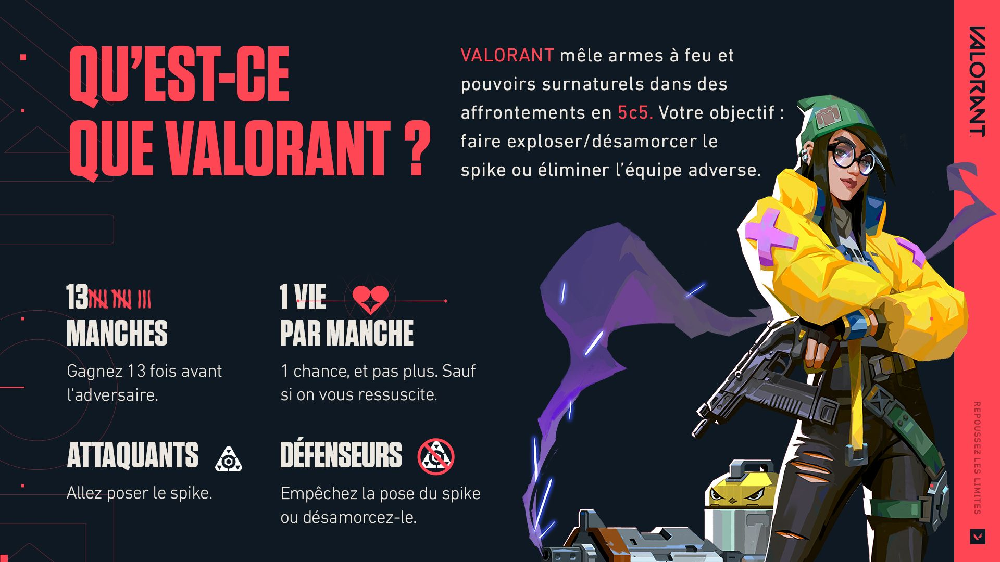
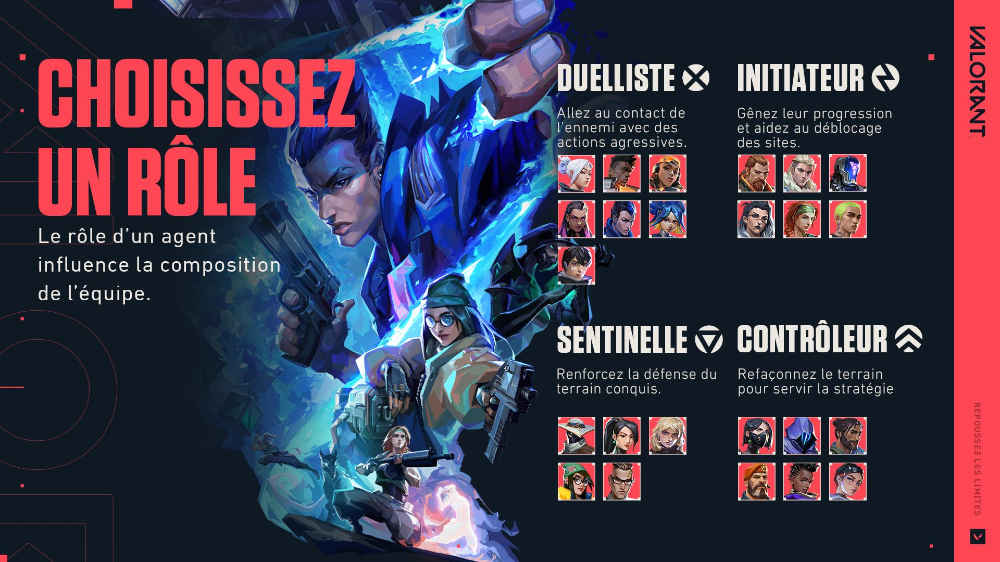
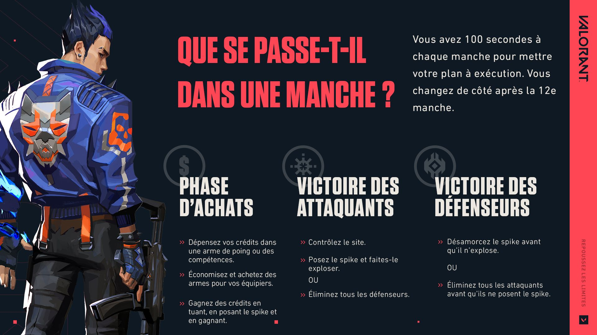
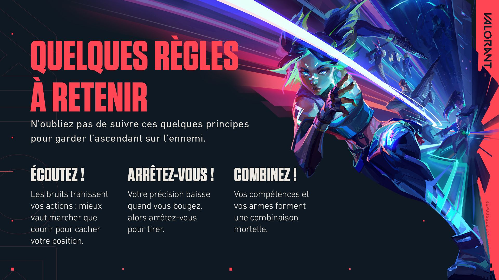

Envie d'avoir un bon niveau dans VALORANT ? Ça commence ici.
Bienvenue dans le guide du débutant de VALORANT !
Que vous veniez de rejoindre le club ou que vous ayez simplement besoin d'un rappel des bases, on est là pour couvrir tout ce qu'il faut savoir pour avoir une bonne maîtrise du jeu. Vous trouverez aussi sur cette page plusieurs guides vidéo réalisés pour vous par certains des joueurs les plus populaires et respectés de notre communauté. Ils pèsent pas mal, vous devriez leur jeter un coup d'œil.
Pas le temps de tout lire ? Regardez la vidéo de Tarik ci-dessous pour un récapitulatif rapide.

Agents
Avant d'entrer dans votre toute première manche, vous allez passer par l'écran de sélection de agents. C'est là que vous devrez faire votre choix parmi les 24 personnages actuellement disponibles, répartis en quatre rôles en fonction de leur gameplay. Vous remarquerez que tous les agents ne sont pas déverrouillés sur votre compte, au début. Mais plus vous jouerez, plus vite vous les obtiendrez !

Chaque agent dispose de sa propre combinaison de compétences, conçue pour fonctionner avec les autres et vous porter vers la victoire. S'il n'est pas obligatoire de compter un agent de chaque rôle dans votre équipe de cinq, vous verrez qu'avoir une composition variée, où chacun s'occupe de son job spécifique, vous donnera plus de chances de victoire. Par exemple, il sera plus facile de pénétrer un site si vous avez un contrôleur pour enfumer la ligne de vue des ennemis potentiellement en embuscade !
Manches et Économie
Quand tout le monde a choisi son agent, vous arrivez sur une carte aléatoire et la première manche peut commencer.
Vous commencerez en attaque ou en défense, et vous changerez de côté au bout de 12 manches. Avant le début officiel de chaque manche, vous disposez d'un certain temps pour acheter des outils et des compétences en préparation du combat à venir. Votre agent et votre style de jeu devraient déterminer ce que vous achetez en fonction du nombre de crédits que vous possédez. Préférez-vous investir dans une compétence qui soigne votre équipe, ou dans une meilleure arme pour abattre vos ennemis ?

Selon que vous êtes attaquant ou défenseur, vous devrez soit essayer de poser le spike et de le faire exploser, soit de le désamorcer une fois que l'ennemi l'aura posé. Dans tous les cas, éliminer vos adversaires rendra la tâche d'autant plus facile.
Pour plus d'informations, écoutez iiTzTimmy vous en apprendre plus sur la façon dont les manches et la dépense de crédits fonctionnent pour les deux équipes [0:27].
Armes
Dans VALORANT, il y a une arme pour chaque situation. Vous pouvez étudier les caractéristiques de chacune sur notre page dédiée à l'arsenal.
En cas de doute, achetez un type d'arme donné et voyez s'il correspond à votre style, à votre niveau de maîtrise et à la stratégie de votre équipe. Puisque vous n'aurez pas toujours les moyens d'acheter l'arme convoitée, essayez-en d'autres pour déterminer celle qui vous plaît le plus et toujours savoir quoi faire dans chaque situation.
Cartes
VALORANT compte actuellement 11 cartes, que vous pouvez consulter ici. Elles offrent chacune une scène différente sur laquelle humilier vos ennemis. Faites briller votre créativité et votre habileté au tir pour mettre en place une stratégie adaptée à la carte sur laquelle vous jouez. Apprenez-les par cœur pour prévoir les mouvements de vos ennemis et surveiller les angles d'attaque. N'oubliez pas de vérifier que personne ne se cache dans les coins !
Vous préférerez sûrement jouer certains agents sur certaines cartes en fonction de votre style de jeu. Certaines disposent de terrains en hauteur qui vous donneront envie de jouer des agents capables de sauter ou de se téléporter. Dans la vidéo suivante, Mixwell se penche en détail sur quel agent choisir pour quelle carte en fonction de ses compétences.
Astuces
Maintenant que vous maîtrisez les bases, voici quelques règles qu'il vous faudra retenir pour mieux exécuter votre stratégie. À chaque manche, demandez-vous : « Ai-je besoin que les ennemis m'entendent courir, ou vaut-il mieux que je marche ? » « Ai-je une compétence susceptible de m'aider à atteindre mon prochain objectif ? » Et en face d'un ennemi, ne perdez pas votre calme. Arrêtez de vous déplacer avant de tirer pour conserver votre précision.

Communication
La communication est mère de toutes les vertus (comme chacun sait), et c'est tout aussi vrai dans VALORANT. Que ce soit pour renseigner votre équipe sur la position d'un ennemi ou pour acclamer la victoire en 1 contre 3 d'un allié, communiquer doit toujours être votre priorité. Pas envie d'utiliser le chat vocal ? Signalez la position ennemie grâce aux pings et utilisez les dialogues en jeu de votre agent pour exprimer vos besoins.
Et si ça ne vous convainc toujours pas, vous ne résisterez pas aux arguments de TenZ en faveur de l'importance d'une bonne communication [4:40].
PARAMÈTRES
À mesure que vous vous familiariserez avec votre propre style de jeu, jetez un coup d'œil aux paramètres pour vous assurer qu'ils s'y accordent de façon optimale. Triturer les paramètres peut faire un peu peur au début, heureusement, Kyedae est là pour vous montrer les plus importants [0:22].
Si la compétition fait partie de l'ADN de VALORANT, ça ne veut pas dire qu'il faut être sérieux tout le temps. Quand vous avez besoin de faire une pause du classement ou juste de vous amuser sans pression avec vos amis, essayez les autres modes, comme non classé et Vélocité. La défaite fait moins mal quand il n'y a pas de SC (score de classement) en jeu !
Vous ne nous croyez pas ? Regardez cette vidéo de Starsmitten sur les différents modes de jeu, qui montre vraiment à quel point VALORANT peut être chaotique (mais marrant !) Avertissement : baissez votre son [2:06].
Et voilà, le guide du débutant de VALORANT est terminé ! Vous en voulez plus ? Nous vous tenons au courant des nouveaux agents, des cartes inédites et de tout le reste sur notre page d'actualités. Vous pouvez aussi nous suivre sur les réseaux sociaux pour tout le reste. À bientôt sur le terrain !